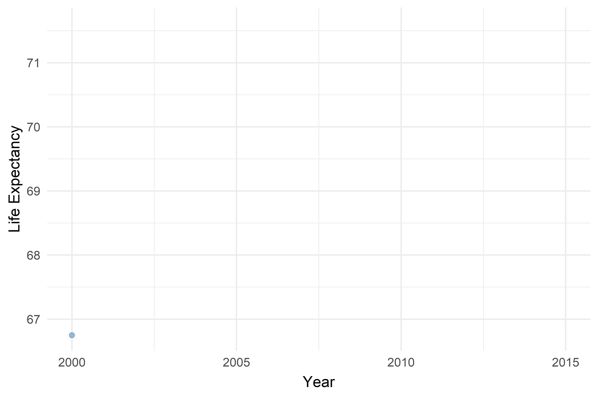
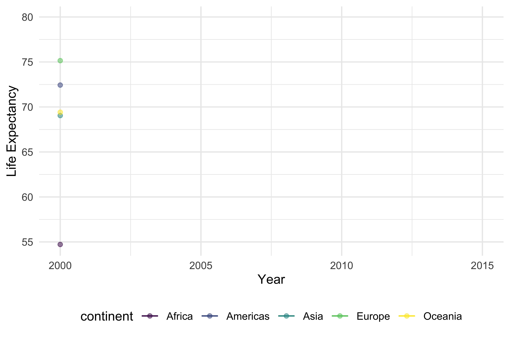

Exploratory Analysis
Global Trend of Life Expectancy From 2000 to 2015
world_life_exp =
life_exp_df %>%
group_by(year) %>%
summarize(avg = mean(lifeexpectancy)) %>%
ggplot(aes(x = year, y = avg)) +
geom_line(color = "#377EB8") +
geom_point(alpha = .5, color = "#377EB8") +
labs(
x = "Year",
y = "Life Expectancy",
color = "Continent"
) +
transition_reveal(as.integer(year))
animate(world_life_exp, duration = 8, renderer = gifski_renderer())
#ggplotly(world_life_exp)World Life Expectancy From 2000 to 2015 By Continent
life_exp_continent =
life_exp_df %>%
group_by(continent,year) %>%
summarize(avg = mean(lifeexpectancy)) %>%
ggplot(aes(x = year, y = avg, color = continent)) +
geom_line() +
geom_point(alpha = 0.5) +
labs(
x = "Year",
y = "Life Expectancy"
) +
transition_reveal(as.integer(year))
animate(life_exp_continent, duration = 8, renderer = gifski_renderer())
#ggplotly(life_exp_continent)World Life Expectancy From 2000 to 2015 By Development Status
life_exp_status =
life_exp_df %>%
group_by(status,year) %>%
summarize(avg = mean(lifeexpectancy)) %>%
ggplot(aes(x = year, y = avg, color = status)) +
geom_line() +
geom_point(alpha = 0.5) +
labs(
x = "Year",
y = "Life Expectancy"
) +
transition_reveal(as.integer(year))
animate(life_exp_status, duration = 8, renderer = gifski_renderer())
#ggplotly(life_exp_status)To vizualize correlation between the development status of a country and Life expectancy
develop_plt =
life_exp_df %>%
ggplot(aes(x = status, y = lifeexpectancy, fill = status))+
geom_violin(width=1) +
geom_boxplot(width=0.1, color = "red", alpha = 0.2) +
scale_fill_hue(c=45, l=80) +
theme(
legend.position="none",
plot.title = element_text(size=11)
) +
labs(
x = "Development Status",
y = "Life Expectancy",
title = "Life Expectancy VS. Development Status"
)
develop_plt
World life Expectancy by Countries with GDP Values
gdp_le =
life_exp_df %>%
mutate(
continent = as.factor(continent),
continent = fct_relevel(continent, c("Africa","Americas","Oceania","Asia", "Europe"))) %>%
ggplot(aes(x = lifeexpectancy, y = gdp, color = country)) +
geom_point(alpha = .6) +
labs(
x = "Life Expectancy",
y = "GDP Value"
) +
facet_grid(.~ continent) +
guides(
shape = guide_legend(override.aes = list(size = 3)),
color = guide_legend(override.aes = list(size = 3))) +
theme(legend.title = element_text(size = 7),
legend.text = element_text(size = 6),
legend.key.size = unit(4, "cm"))
ggplotly(gdp_le)